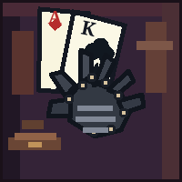
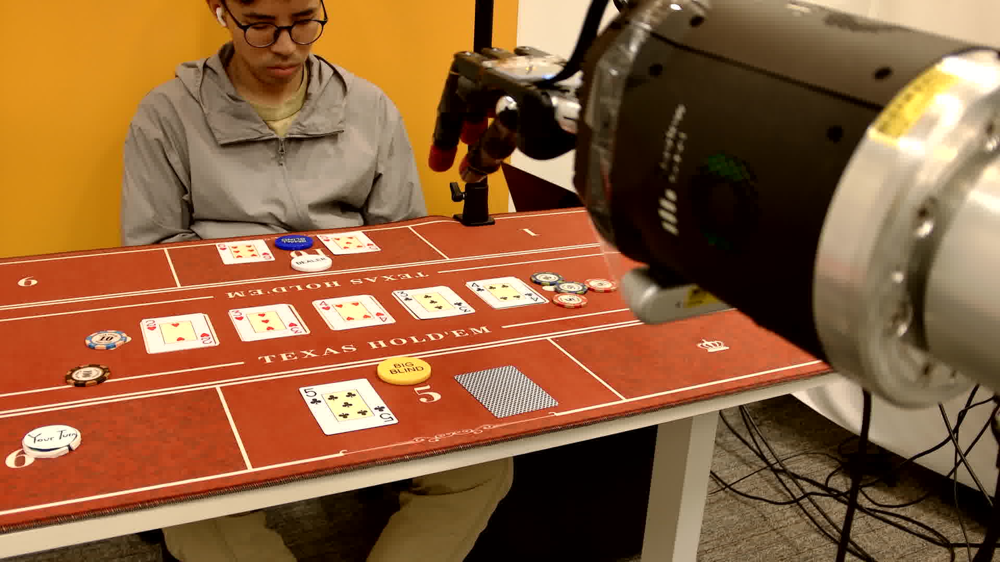
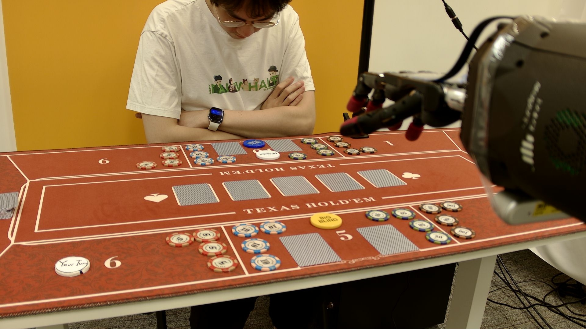
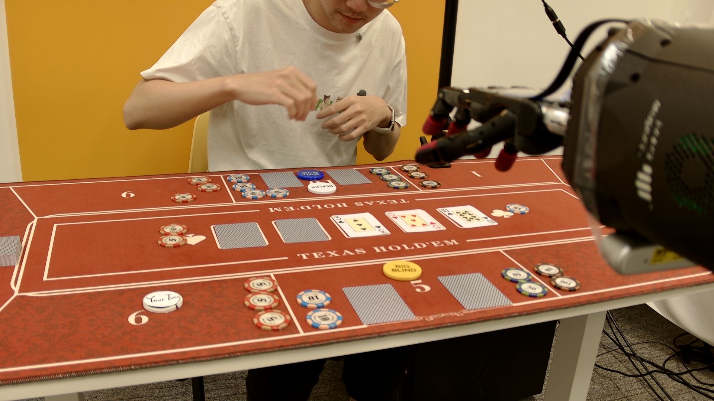

Agent Evaluation
The agentic-perception benchmark scores whether a perceiver can recover structured table state from fixed tabletop states. It is isolated from poker-action selection and physical execution.

DexHoldemSystem Evaluation
This page follows the paper's Section 3.3, Section 4.5, and Appendix B.3. It is separate from agent evaluation: the agent benchmark isolates visual state parsing, while system evaluation composes GPT 5.5, deterministic routing, and the pi0 dexterous policy in real hand-level rollouts.

Boundary
The agentic-perception benchmark scores whether a perceiver can recover structured table state from fixed tabletop states. It is isolated from poker-action selection and physical execution.
The system-level study runs closed-loop Texas Hold'em-style hands. It counts captured states, wait branches, recovery dispatches, human-help requests, and repeated pi0 primitive dispatches across the full trace.
Section 3.3 Protocol
At each loop step, the agent captures an agent-view image, parses it into structured state, routes that state through deterministic workflow gates, and dispatches a dexterous-policy primitive whenever physical motion is required. The main agent is not invoked at every captured state: the router handles waiting, verification, completion, continuation of pending multi-atom translations, and retryable recovery.

Section 4.5 / Table 3
The reported instantiation uses the Codex harness with GPT 5.5 as both perceiver and main agent, paired with the pi0 dexterous policy. These three released trajectories are case studies, not a statistically powered success-rate estimate.
| Agent | Policy | Trajectory | States | AP | DPP | WA | HL | RC | LAP | LDP |
|---|---|---|---|---|---|---|---|---|---|---|
| GPT 5.5 | pi0 | (i) | 22 | 8 | 7 | 7 | 2 | 1 | view_card(L) | pick_up_left |
| GPT 5.5 | pi0 | (ii) | 54 | 13 | 22 | 26 | 0 | 1 | collect_winnings | push_100 |
| GPT 5.5 | pi0 | (iii) | 23 | 8 | 10 | 7 | 0 | 1 | call | pick_up_left |
AP counts dispatched agent primitives, including request_human. DPP
counts dispatched dexterous-policy primitives from the physical policy suite.
WA counts wait-branch events; HL counts human-help requests; RC counts recovery dispatches for retryable failures.
LAP and LDP identify the agent primitive and dexterous-policy primitive occupying the most consecutive states. They are longest-run counters, not final actions.
Section 4.5 Case Study
The main text inspects trajectory (iii). Across 23 states, GPT 5.5 makes eight high-level decisions: it views both hole cards, raises 10 chips, checks twice, calls a 200-chip bet, and reveals both cards at showdown. About one third of the states are spent in wait branches around chip or card changes. The run has one router-level retry, never requests human help, and terminates after the second card reveal.
A 22-state rollout: view_card on both hole cards, two
request_human escalations when the scene fails to settle, then
raise (10), check, check, and
call. The final call is interrupted before chip-push completion.
A 54-state rollout: both hole cards are read, the bet escalates through
raise (5), raise (105), two raise (100)
actions, and all_in, then showdown and collect_winnings
expand into chip-pull atoms.
A 23-state rollout: both hole cards are read, the betting sequence is
raise (10), check, check, and
call, and showdown finishes through show_card(L) and
show_card(R) after one router-level retry.
Appendix B.3
Appendix B.3 shows per-state agent-view captures for all three rollouts. The label grammar is part of the evaluation: it distinguishes main-agent choices, waits, continuation of already translated multi-atom primitives, verification, completion, recovery, and terminal states.
view_card(L), raise (10), check, call, show_card(R), collect_winnings, and request_human.wait (scene), wait (acting), and wait (turn) indicate scene instability, robot still acting, or not the robot's turn.cont. labels advance a multi-atom translation already chosen earlier, such as another push_5 atom in a raise (105) sequence.cache hole card, verify, complete, retry, and end expose visual reads, verification, recovery, and terminal rollout states.Takeaway
The counters show that closed-loop execution is dominated by repeated waiting, verification, continuation, and occasional recovery. Even when the policy and perceiver solve parts of the benchmark in isolation, the composed rollout must keep maintaining state, selecting or continuing legal primitives, executing pi0 actions, and verifying the resulting table state across many captured states.

s0: capture and parse before the first route decision.
s1: table state after a dispatched physical primitive.
s2: continued verification, wait, or recovery routing.